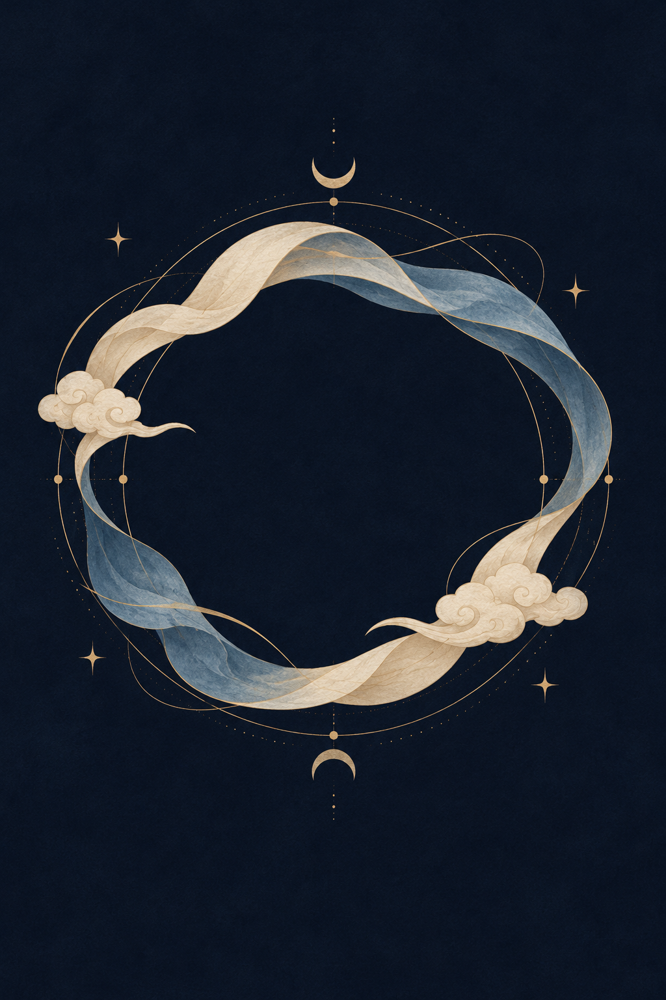

01
See the whole picture
Keep projects, milestones and decisions connected in one readable view.
Bring projects, people and plans into one calm workspace. Keep the vision close and every next step clear.
Discover Sky Vision →
Creative work moves between wide-open ideas and careful detail. Sky Vision gives both a place to live.
Keep projects, milestones and decisions connected in one readable view.
Turn ambitious plans into a clear, shared sequence of next actions.
Choose the views and details your team needs. Work beautifully with or without images.
From a simple task list to a full board, your project stays legible. Status is named, not only colored. Images are optional.
Read the product principles →